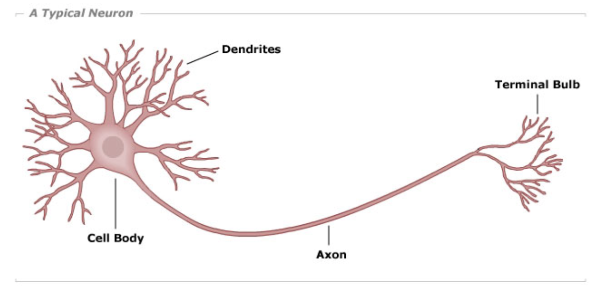
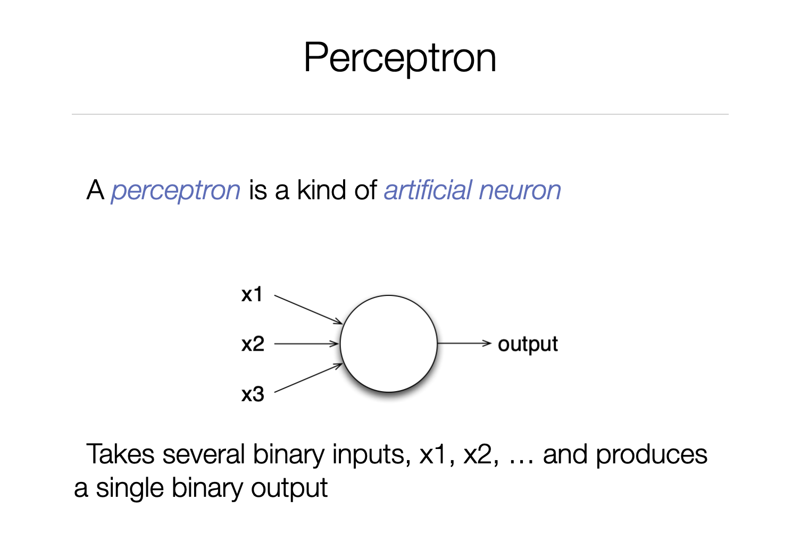

3 Perceptron
3.1 The idea behind a Perceptron comes from a neuron in a brain
In the next example a Perceptron is introduced. A Perceptron is a way of creating an artificial ‘simulation’ of the way a human brain works. In 1943 Warren S. McCulloch and Walter Pitts expressed the idea in an article ‘A Logical Calculus of the Ideas Immanent in Nervous Activity’.

3.2 Implementing this in a machine
The idea behind a Perceptron is that it has a number of inputs, each input having its own weight, furthermore it has a bias. Every input channel accepts a numerical value, and the weight determines the importance of that input.

This example has 3 inputs: the feeds into the inputs are called x1, x2 and x3. The corresponding weights are called w1, w2 and w3. To calculate the output of the Perceptron first the 'weighted sum' is calculated, then the bias is added to that sum:
z := w1*x1 + w2*x2 + w3*x3 + bias
After that it is activated (or: the activation function is calculated), for which in this example we take the formula: - if value of z is above 0, output will be 1 - otherwise output will be 0
In code the ‘z’ can be calculated by:
| x1 x2 x3 w1 w2 w3 bias |
"When a neuron is `fired` that means there are `input` values.
The input values are called x1 until x3 here:"
x1 := 0.35 .
x2 := 1.2 .
x3 := 0.54 .
"The weights w1 to w3 are properties of the neuron, as is the bias:"
w1 := 0.234 .
w2 := 0.32 .
w3 := 0.58 .
bias := 5 .
z := (w1 * x1) + (w2 * x2) + (w3 * x3) + bias.After which the activation gives:
z > 0
ifTrue: [1]
ifFalse: [0]Well, that was an example with 3 inputs. Maybe play around a bit with the input values (x1, x2, x3) to get output 0. (inspect the playgrounds again after changing the values)
Now we will take a look at some more generic code that is being executed in this system: (why is this more generic?)
| inputs_x weights_w bias |
inputs_x := #(0.35 1.2 0.54).
weights_w := #(0.234 0.32 0.58).
bias := 5.
z := (inputs_x
with: weights_w
collect: [ :x :w | x * w ])
sum
+ biasAnswer: This is more generic because you can add a fourth (and fifth, and…) value to inputs_x and weights_w: the code will still work, as long as the number of input values is equal to the number of weights.
The code used by your machine (your laptop running GToolkit with this workshop) is like this:
{{gtMethod:Neuron>>feed:|expanded=true}}
For a Neuron the so-called activationFunction is a ‘step’ function: If z>0 the output of the Perceptron will be 1, otherwise 0, which you can see coded in method ‘eval:’ in class ‘StepAF’:
{{gtMethod:StepAF>>eval:|expanded=true}}
The ‘^’ means that the method will ‘return’ that value.